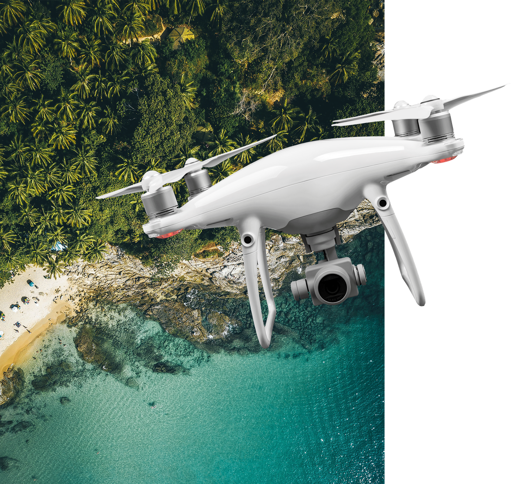

Click here to view more cat photos.
BMW series

This cars:
- Made in Germany
- Reliable
- Good engines roar
Which BMW series will you choose?

ABOUT STRIKER DRONES

58
Drones Available
19
Drone Models
2000
Clients in 2019
Click here to view more cat photos.
This cars:
Which BMW series will you choose?

58
Drones Available
19
Drone Models
2000
Clients in 2019